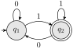
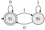
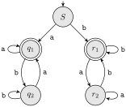

Section 2.2 Deterministic finite automata
Subsection 2.2.1 Class Activities
Now you know that to specify a DFA, it is really enough to give the transition function \(\delta\text{.}\) A transition table or transition diagram has enough information to specify the set \(Q\) of states, the set \(\Sigma\) of symbols, the start state, and the set \(F\) of accepting states.
In the reading, you have seen how a DFA is like a very simple computer, modeled by walks on a directed graph. Each move in the walk is determined by the transition function of the DFA as we “consume” the characters in the input string one by one.
Activity 2.2.1.
For each pictured DFA, give a simple description of the language it accepts. Get the instructor to check before moving on.
(a)

(b)

(c)

Remark 2.2.1. Designing DFA.
When designing a DFA or other automaton, it can be helpful to imagine yourself as the DFA and consider your cognition as you read the input word one symbol at a time. What must you remember about the string? How do you perform the DFA’s task? It helps when doing this to remember that the word might be very long, so long you can’t remember it all at once. You also don’t know when the string will end, so you must always be ready with the answer.
Suppose that the alphabet is \(\Sigma = \{0,1\}\) and we wish to accept all words with an odd number of 1s. If you start going through a long input string of 0s and 1s, one symbol at a time, do you need to see the whole string? Do you need to remember any of it? No, you simply keep track of whether the number of 1s you have seen so far is even or odd.
This gives a clue to the design of the DFA. There are two states \(q_0\) and \(q_1\text{,}\) corresponding to having seen an even or odd number of 1s so far. We begin in state \(q_0\text{,}\) since at the beginning, we haven’t “seen” any symbols and in particular have seen no 1s. Now the transitions should be clear: all transitions labeled with \(0\) are self-loops, since the number of 1s does not change. Similarly, each transition labeled with \(1\) changes state, because whenever we read a 1, the number of 1s seen so far changes parity.
There is just one accepting state, state \(q_1\text{,}\) because that is the condition for having seen an odd number of 1s so far. If we are in state \(q_1\) when the input ends, we win; otherwise, our string must be rejected.
Activity 2.2.2.
Give diagrams or tables for DFA accepting the following languages over the alphabet \(\{0,1\}\text{.}\) Make sure your answers include at least one table and one diagram. Get the instructor to check before you go on.
- The set of all strings with 011 as a substring.
- Words on \(\Sigma = \{a, b\}\) with an odd number of b
- Words on \(\Sigma = \{0, 1\}\) that start with 000
- Words on \(\Sigma = \{0, 1\}\) that end in 11
- The set of all strings with three consecutive 0s (not necessarily at the end)
Activity 2.2.3.
Give DFA accepting the following languages over the alphabet \(\{0,1\}\text{:}\)
- The set of all strings \(x\) beginning with a 1 such that, when \(x\) is interpreted as a binary integer, it is a multiple of 3. For example, strings 11, 110, and 1111 are in the language, while 10, 100, and 111 are not.
- The set of all such strings that, when interpreted in reverse as binary integers, are multiples of 3. Examples of strings in the language are 0, 00011, and 1001000. Observe there is no restriction on the leading digit in this part.
Hint.
There is an interpretation with 3 states using ideas from modular arithmetic, similar to Remark 2.2.1.
Activity 2.2.4.
Make a DFA that is equivalent to the marble-rolling toy of Activity 2.1.1. This will take some thought. I did it with 16 states originally, and 13 of them turned out to be accessible.
Definition 2.2.2.
Recall that if \(A = (Q, \Sigma, q_0, \delta, F)\) is an automaton, we defined the extended transition function inductively for a word \(x = ya\) (where \(\abs{y} \geq 0\) ) by
\begin{equation*}
\hat{\delta}(q, x) = \begin{cases}
q \amp \text{if $\abs{x} = 0$} \
\delta(\hat{\delta}(q, y), a) \amp
\text{if $x = ya$}.
\end{cases}
\end{equation*}
However, we think informally about \(\hat{\delta}\) as describing what happens along a path with a certain string of labels. So it should not matter how we break the input string in the definition of \(\hat{\delta}\text{.}\) That is, we should be able to use any factorization \(x = yz\text{,}\) not just one with \(\abs{z} = 1\text{.}\)
Activity 2.2.5.
Use induction on \(\abs{z}\) to prove that
\begin{equation*}
\hat{\delta}(q, yz) = \hat{\delta}(\hat{\delta}(q, y), z)\text{.}
\end{equation*}
Hint.
Solution.
Use the induction framework elaborated in Section 1.2, particularly in Remark 1.2.2.
We will prove the theorem by induction on \(\abs{z}\text{.}\) The base case, which is \(\abs{z} = 0\text{,}\) then looks like
\begin{equation*}
\hat{\delta}(q, y\varepsilon) = \hat{\delta}(\hat{\delta}(q, y), \varepsilon)\text{.}
\end{equation*}
We compute
\begin{align}
\hat{\delta}(q, y \varepsilon) \amp = \hat{\delta}(q, y)\tag{2.2.1}\\
\amp = \hat{\delta}(\hat{\delta}(q, y), \varepsilon)\text{.}\tag{2.2.2}
\end{align}
Here (2.2.1) follows by the definition of concatenation, and (2.2.2) follows by Definition 2.2.2. This completes the proof that our theorem is true when \(\abs{z} = 0\text{.}\)
For the inductive step, let us first clearly state the induction hypothesis. It is that, for some \(z \in \aster{\Sigma}\text{,}\) we have
\begin{equation*}
\hat{\delta}(q, yz) = \hat{\delta}(\hat{\delta}(q, y), z)\text{,}
\end{equation*}
for all \(y \in \aster{\Sigma}\text{.}\) Now let \(n\) be the length of \(z\text{.}\) It plays no role whatsoever in the proof, and really doesn’t even need a name, but you might feel more comfortable seeing it in the cast list.
If \(a\) is a symbol from \(\Sigma\text{,}\) then \(w = za\) has length \(n + 1\text{.}\) Let us compute:
\begin{align}
\hat{\delta}(q, yw) \amp = \hat{\delta}(q, yza)\tag{2.2.3}\\
\amp = \delta(\hat{\delta}(q, yz), a)\tag{2.2.4}\\
\amp = \delta(\hat{\delta}(\hat{\delta}(q, y), z), a)\tag{2.2.5}\\
\amp = \hat{\delta}(\hat{\delta}(q, y), za)\tag{2.2.6}\\
\amp = \hat{\delta}(\hat{\delta}(q, y), w)\text{.}\tag{2.2.7}
\end{align}
Above, (2.2.3) follows by substitution, (2.2.4) by Definition 2.2.2, (2.2.5) by the induction hypothesis, (2.2.6) by Definition 2.2.2 again, and (2.2.7) by substitution again. This completes the inductive step.
Since every word in \(\aster{\Sigma}\) is either empty or obtained by concatenation of a letter to the end of a shorter word, the proof by induction is complete.
You should make sure you see and meditate on a solution to Activity 2.2.5. It is an illustrative example for many similar induction proofs to follow.
Activity 2.2.6.
Show that for any state \(q\text{,}\) string \(x\text{,}\) and input symbol \(a\text{,}\)
\begin{equation*}
\hat{\delta}(q, ax) = \hat{\delta}(\delta(q, a), x)\text{.}
\end{equation*}
Hint.
Use the result of Activity 2.2.5.
Activity 2.2.7.
Give DFA accepting the following languages over the alphabet \(\{0,1\}\text{:}\)
- The set of all strings such that each block of 5 consecutive symbols contains at least two 0s
- The set of all strings whose third symbol from the right is a 1
- The set of strings that either begin or end (or both) with 01
- The set of strings such that the number of 0s is divisible by 5 and the number of 1s is divisible by 3
Activity 2.2.8.
Let \(A\) be a DFA and \(q\) a particular state of \(A\text{,}\) such that \(\delta(q, a) = q\) for all \(a \in \Sigma\text{.}\) Show by induction on \(\abs{w}\) that \(\hat{\delta}(q, w) = q\) for all input words \(w\text{.}\)
Activity 2.2.9.
Let \(A\) be a DFA and \(q\) a particular state of \(A\text{,}\) such that \(\delta(q, a) = q\) for all \(a \in \Sigma\text{.}\)
- Show by induction on \(n\) that for all \(n \geq 0\text{,}\) \(\hat{\delta}(q, a^n) = q\text{,}\) where \(a^n\) is the string consisting of \(n\) \(a\)’s.
- Show that either \(\{a\}^{\ast} \subseteq L(A)\) or \(\{a\}^{\ast} \cap L(A) = \varnothing\text{.}\)
We use the exponential notation for self-concatenation of words as well as individual input symbols from \(\aster{\Sigma}\text{.}\) For example, if \(x = ab\) then
\begin{equation*}
x^3 = ababab\text{.}
\end{equation*}
Activity 2.2.10.
Let \(A = (Q, \Sigma, \delta, q_0, \{q_f\})\) be a DFA, and suppose that for all \(a \in \Sigma\) we have
\begin{equation*}
\delta(q_0, a) = \delta(q_f, a)\text{.}
\end{equation*}
- Show that for all \(w \ne \varepsilon\) we have \(\hat{\delta}(q_0, w) = \hat{\delta}(q_f, w)\text{.}\)
- Show that if \(x\) is a nonempty string in \(L(A)\text{,}\) then for all \(k > 0\text{,}\) then \(x^k\text{,}\) the \(k\)-fold concatenation of \(x\text{,}\) is also in \(L(A)\text{.}\)
Activity 2.2.11.
Consider the DFA with the following transition table:
| 0 | 1 | |
|---|---|---|
| \(\to A\) | \(A\) | \(B\) |
| \(\ast B\) | \(B\) | \(A\) |
Informally describe the language accepted by this DFA, and prove by induction on the length of the input that your description is correct.
Hint.
When setting up the inductive hypothesis, it is wise to make a statement about what inputs get you to each state, not just what inputs get you to the accepting state.